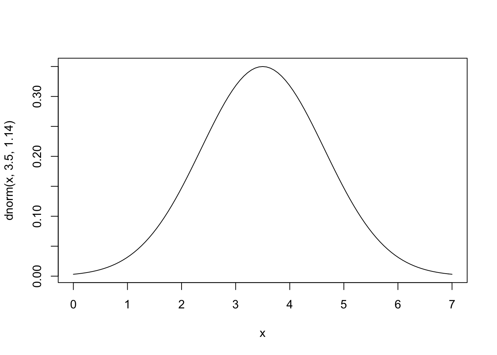
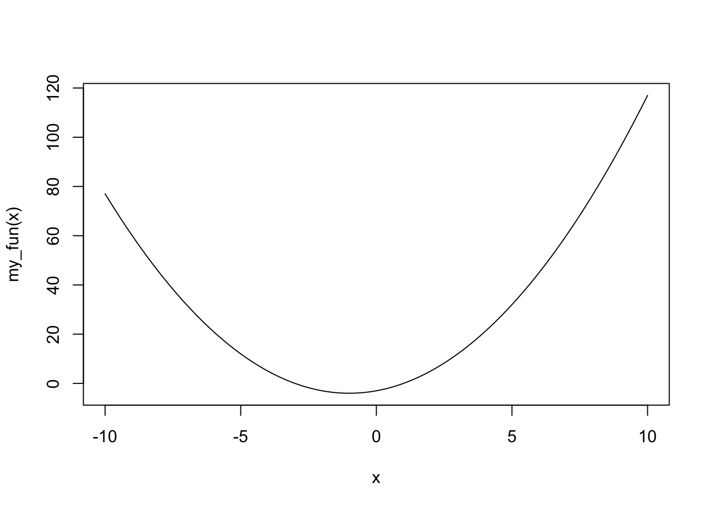

Chapter 15 Simulation
15.1 What Are Simulation Studies
Simulation studies are used in statistics to verify theoretical results, and to do “what-if” experiments. The are commonly used in a variety of applications and fields. Often times we have a particular theory or an idea about how things work. In order to verify that our theory is correct we can simulate a data set with known properties, and then check if the data set matches our theory. In short, a simulation study is a computer experiment that involves creating data that is used to estimate probabilities, densities, statistics, and compare performance of methods.
Simulations are very important, and can range greatly in complexity. We will focus on simple techniques in this section. For a more complete discussion on simulation studies in statistics, and best practices see this freely available article online at https://onlinelibrary.wiley.com/doi/10.1002/sim.8086.
15.2 Review Random Variables and Probability
Before discussing how to simulate data with specific properties we review the concept of a random variable. This discussion is adapted primarily from Chapter 3 and 4 of Diez, Cetinkaya-Rundel, and Barr (2020). A random variable is a random process or variable with a numeric outcome. Each outcome is associated with a particular probability. The distribution of a random variable is a map for the possible outcomes and the respective probabilities. Distributions can be in the form of tables, histograms, and formulas. Random variables in general have a typical value which is called the expected value, this is the most common value we would expect the random variable to be. However, in practice random variables also have variability, so we do not expect to obtain the expected value for every random variable.
Some examples of random variables include: what side a fair sided coin lands on, what side a dice lands on, and how tall an adult bison is. We can ask about specific probabilities associated with this random variables. Some probabilities are easier to find than others:
Suppose we flip a fair sided coin. What is the probability we land on a head?
Suppose we role a fair d6. What is the probability we land on a 5 or a 6?
Suppose we measure the height of an adult bison (in feet). What is the probability the height is between 4ft and 6ft?
15.2.1 Probability
We like to analyze random variables and study the probability of a particular set of outcomes, an event. There are two types of probabilities we can think of.
Empirical Probability: a probability based on, concerned with, or verifiable by observation or experience
Based on observed/sample data
Let \(X=\) the number of times we observe an event, and \(n=\) the number of trials
The empirical probability of an event is \(\hat{p} = \frac{X}{n}\)
Also known as the sample estimate
Theoretical Probability: a probability based on a system of ideas intended to explain something, especially one based on general principles independent of the thing to be explained.
Based on a statistical, physical, or biological principals.
It is a probability we would expect “in theory”.
Denoted by \(p\)
Sometimes called the hypothesized probability
In real life we do not know the true probability, instead we have a probability we expect in theory, and we estimate a probability using empirical/sample data. Then we check if our estimate and theory are similar. Both types of probabilities follow the same rules and axioms we learn in introductory statistics courses.
15.2.2 Fundamental Theorem of Statistics

The fundamental theorem of statistics (FTS) connects empirical probabilities and theoretical probabilities together. This theorem goes by many names: Central Limit Theorem , Law of Large Numbers, etc. It is the “Superman” of statistical theories, and is HUGELY important in statistics. For many statistical inference methods (confidence intervals, p-values, hypothesis tests), we have a theory (theoretical probability), we get a sample and calculate an estimate (empirical probability), and then we check if the two types are similar to each other and make a conclusion. The FTS says that our empirical probability eventually will converge to the true probability as the sample size gets larger. So if our empirical probability and theoretical probability are close together, then are theory is likely to be correct. In contrast, if they are not close together, are theory is likely to be wrong.
By the Fundamental Theorem of Statistics, we expect that our empirical probabilities converge to the theoretical/true probabilities as the sample size increases.
\[\hat{p} \rightarrow p\]
Many different versions of this theorem, and different names for the theorem. We have discussed this theorem in terms of probabilities, but we can also talk about it in terms of statistics, like the arithmetic mean. The principal is the same though, the empirical estimate will eventually converge to the true value as the sample size increases. This means bigger samples are more likely to converge to the truth, but how big should it be?
15.3 Simulating an Event
Suppose we have a fair sided coin and want to know the probability of flipping a heads. Our knowledge about coins tells us that the probability should be 0.5. This is the probability we expect in theory based on outside knowledge. However, we can also simulate flipping a coin, and estimating the probability of getting a head. Suppose we flip a coin 10 times and count how many heads we observe: H, H, T, T, T, T, H, T, T, T
We can create a data frame which shows are estimated probability based on the number of simulations we have.
NumHeads <- c(1, 1, 0, 0, 0, 0, 1, 0, 0, 0)
CumHeads <- cumsum(NumHeads)
EstHeads <- CumHeads/1:length(NumHeads)
results <- data.frame(NumHeads, CumHeads, EstHeads)
results## NumHeads CumHeads EstHeads
## 1 1 1 1.0000000
## 2 1 2 1.0000000
## 3 0 2 0.6666667
## 4 0 2 0.5000000
## 5 0 2 0.4000000
## 6 0 2 0.3333333
## 7 1 3 0.4285714
## 8 0 3 0.3750000
## 9 0 3 0.3333333
## 10 0 3 0.3000000Each row \(i\) of the data frame represents simulation \(i\). The first column denotes when a head was observed, using a 1 for head and 0 for tails. The second column has the number of heads by simulation \(i\), this is known as the cumulative number of heads. The third column has the estimated/empirical probability of observing a heads using all the information up to simulation \(i\), which we can denote as \(\hat{p}_i\). Our final estimate for probability of observing a heads using this simulation study is \(\hat{p}_{10} = 0.3\). Is this a good simulation study?
15.3.1 Running Average Plot
If we only flip the coin a few times, then the estimated probability that may not be accurate due to random fluctuation. However, the more coin flips we consider the more likely the estimated probability approaches the truth (which we known due to FTS). A fair question to ask with simulations is: “how many simulations do we need?”. There are rigorous rules that we can use to determine how many simulations we need until our estimate converges to the truth; however, we will focus on summary tables and visualization tools for now. We know we have enough simulations when our estimate seems to “stabilize”. We can track the statistics or the estimated probability as we consider more simulations. We can visualize this using a running average plot, also known as a cumulative proportion plot. In a running average plot we have the number of trials on the x-axis, and the estimated probability using all data up to trial \(i\) on the y-axis. For example, consider the first five coin flips above: 1, 1, 0, 0, 0. Then the estimated probability of successes using “n” number of trials is the following.
- When the number of trials is \(n = 1\), the estimated probability of a head is \(\hat{p}_1 = (1)/1 = 1\)
- When the number of trials is \(n = 2\), the estimated probability of a head is \(\hat{p}_2 = (1+1)/2 = 1\)
- When the number of trials is \(n = 3\), the estimated probability of a head is \(\hat{p}_3 = (1+1+0)/3 = 2/3\)
- When the number of trials is \(n = 4\), the estimated probability of a head is \(\hat{p}_4 = (1+1+0+0)/4 = 2/4\)
- When the number of trials is \(n = 5\), the estimated probability of a head is\(\hat{p}_5 = (1+1+0+0+0)/5 = 2/5\)
plot(1:length(NumHeads), results$EstHeads, main = "Running Average Plot",
xlab = "Simulation", ylab = "Estimated Probability", type = "b",
ylim = c(0, 1))Clearly, 10 coin flips is not enough. The plot is a bit erratic, and our final estimate is 0.3. We know we have not done enough simulations because we know the probability of getting a head is 0.5.
15.3.2 Set Seed
Another problem is the simulation itself. If you repeated this simulation you would get a very different answer. Often times when running a simulation we will want to use the same numbers over and over again. The function sample() generates values randomly though, which means each time we call this function we will get new and different values. In order to make sure our values are consistent each time we run R, or across computers we can set the seed. The seed determines the way the computer generates our random numbers. Normally the seed is random, so each time sample() is called we get a new random sequence. Using the set.seed() function will make sure that the sequence stays the same. Notice with different seeds we get different results.
15.3.3 Stopping Rules
It can be difficult to know when to stop the simulation. In general we need enough simulations so that way the estimate becomes stable. That is, until the plot stops behaving erratically regardless of the seed. You can try this simulation on your own, and see when how many simulations you need for the estimate to become stable and try different seeds.
Some simulations studies implement an stopping rule. A common stopping rule is to stop the simulation when \(|p_i - p_{i-1}| < c\), where \(c\) is some small number like 0.001. When using a stopping rule like this it is a good idea to initialize your simulations with a few trials to prevent stopping really early.
# Initialize results with 10 simulations
set.seed(1)
NumHeads <- sample(c(1, 0), 10, replace = T)
CumHeads <- cumsum(NumHeads)
EstHeads <- CumHeads/1:length(NumHeads)
results <- data.frame(NumHeads, CumHeads, EstHeads)
i <- nrow(results)
# Make a while loop that stops once estimate stablizes
while (abs(results$EstHeads[i] - results$EstHeads[i - 1]) > 0.001) {
new_sim <- sample(c(1, 0), 1, replace = T)
new_cum_sum <- sum(results$NumHeads, new_sim)
new_est_prob <- new_cum_sum/i
new_row <- c(new_sim, new_cum_sum, new_est_prob)
results <- rbind(results, new_row)
i <- i + 1
# Safety precaution to prevent loop running forever
if (i > 10000) {
break
}
}
tail(results)## NumHeads CumHeads EstHeads
## 484 1 248 0.5134576
## 485 1 249 0.5144628
## 486 0 249 0.5134021
## 487 0 249 0.5123457
## 488 1 250 0.5133470
## 489 1 251 0.5143443It looks like it took 489 simulations to stabilize.
15.3.4 Another Example
We can also look at more complicated examples. For example, consider flipping 10 coins for each simulation and we want to know the probability getting three heads or less. This is a harder question, so we might consider creating a function to generate the results more succinctly. The function below returns a 1 if there are less than less_than_value heads out of ten coin flips.
heads_to_check <- function(less_than_value) {
flip_results <- sample(c("Heads", "Tails"), 10, replace = T)
index_heads <- which(flip_results == "Heads")
num_heads <- length(index_heads)
if (num_heads <= less_than_value) {
heads_less_than_value <- 1
} else {
heads_less_than_value <- 0
}
return(heads_less_than_value)
}Now each time we call this function it generates the random data for us. The following code generates three simulations.
## [1] 0## [1] 0## [1] 0This is useful, but it is impractical to call this function hundreds of times. Instead, we can use a loop to repeatedly call the function until the probability of observing less than three heads out of ten stabilizes. If we also have a general idea of how many simulations we want already, we can use the replicate() function.
# Calling this function 1000 times is easier with
# replicate()
set.seed(26)
results <- replicate(1000, heads_to_check(3))
# Store Data
results <- data.frame(results, cum_sum = cumsum(results))
results$est_prob <- results$cum_sum/1:nrow(results)
head(results)## results cum_sum est_prob
## 1 0 0 0.0000000
## 2 1 1 0.5000000
## 3 0 1 0.3333333
## 4 0 1 0.2500000
## 5 0 1 0.2000000
## 6 0 1 0.166666715.4 Working with Known Distributions
We can do simulation studies on more than just a single probability. We can also do simulation studies to learn about the distribution of a random variable. Random variables generate observations according to some sort of pattern. These patterns are referred to as distributions, and can be analyzed visually, and analytically (i.e. through formulas).
Using a formula as a representation for a density is very versatile and useful. For these functions we have parameters which are values that let us further customize the function representation of a density to the specific random variable that we have. Let \(X\) be a random variable, and \(x\) be some observed value.
If \(X\) is a random variable that can only take on values that are discrete (usually integers) then we say the probability of observing some a particular value, say \(x\), is denoted \(p(x)\). There are extremely well known discrete densities that random variables tend to follow and that are available in R. A few of them are listed below.
- Binomial:
\[p(x) = \binom{n}{x} p^x (1-p)^{n-x} \hspace{1cm} x = 0, ..., n\]
Poison: \[p(x) = λ^x exp(-λ)/x! \hspace{1cm} x = 0, ..., n\]
Negative Binomial:
\[Γ(x+n)/(Γ(n) x!) p^n (1-p)^x \hspace{1cm} x = 0, ..., \]
If \(X\) is a random variable that can be any value within a range of numbers then we denote the density function of this random variable by \(f(x)\), this is a continuous random variable. As with discrete random variables, there are extremely well known continuous densities that random variables tend to follow and that are available in R. A few of them are listed below.
- Uniform:
\[f(x) = 1/(max-min)\]
- Log-Normal:
\[f(x) = 1/(√(2 π) σ x) e^{-((log{(x)} - μ)^2 / (2 σ^2))} \hspace{1cm} 0 <x < \infty\]
- Exponential:
\[f(x) = λ {e}^{- λ x} \hspace{1cm} 0 <x < \infty\]
Normal: \[f(x) = 1/(√(2 π) σ) e^{-((x - μ)^2/(2 σ^2))} \hspace{1cm} -\infty <x < \infty\]
t-Distribution
\[f(x) = Γ((n+1)/2) / (√(n π) Γ(n/2)) (1 + x^2/n)^-((n+1)/2)\hspace{1cm} -\infty <x < \infty\]
To see a complete list of well known distribution functions (or densities) that R already has see the help file ?Distributions.
15.4.1 Generating Random Variables
Each distribution available in base R is listed in ?Distributions. Each of the distributions has a link to their corresponding help file which lists four main functions: dxxx(), pxxx(), qxxx() and rxxx(). These are the density function, cumulative distribution function, quantile function, and a random number generator for the particular random variable of interest. The letters xxx are replaced by an code for the particular random variable. The density function (dxxx()) generates the relative probability of observing a particular value. The cumulative distribution function (pxxx()) generates the probability of observing a particular value, and anything smaller than this value. The quantile function (qxxx()) generates what value corresponds to a given percentile. Lastly, the random number generator (rxxx()) will generate a random variable according to the given distribuiton/density. We will focus only on dxxx() and rxxx().
For example, go to ?Distributions and click on dnorm which corresponds to the normal distribution (in the bottom third of the list). Here you will see the functions dnorm(), pnorm(), qnorm(), and rnorm(). To generate a normal random variable with mean 0 and standard deviation 1 we can use the following command.
## [1] -0.1545059## [1] -1.73183694 -1.17100630 -0.14981662 -0.10343645 0.63199579 0.48543427
## [7] 0.04936201 0.92111550 -0.25092886 -0.86457930 -1.52886442 -0.02578830
## [13] -0.87182251 -1.56344137 -2.64338842 -0.10758754 0.28252965 -0.46907419
## [19] -0.36083998 1.29157163However, as we saw in the previous section, these common distribution functions have parameters which let us further customize the behavior of the random variable. We can change the parameters of any of the distributions in R using the function arguments.
## [1] 10.72924## [1] 10.057270 10.838536 10.778326 10.028733 9.411916 10.676765 9.968147
## [8] 10.144458 9.480794 10.211399 10.513579 10.003038 9.445457 9.698689
## [15] 9.477504 10.463018 10.279815 10.548096 10.006456 9.745363To find the relative probability of observing a particular value for a normal distribution we use dnorm().
# Relative probability of observing the value 0.25 for a
# normal random variable with mean 0 and standard devation
# 1
dnorm(0.25)## [1] 0.3866681# Relative probability of observing the value 0.25, -0.5, 2
# for a normal random variable with mean 0 and standard
# devation 1
dnorm(c(0.25, -0.5, 2))## [1] 0.38666812 0.35206533 0.0539909715.5 Simulating a Distribution
Recall a binomial random variable \(x\). The random variable denotes the number of “successes”, where there are \(n\) trials. Each trial has the same probability of success, \(p\). Each trial is also independent. The probability of failure is \((1-p)\).
The analytical expression for the probability of the random variable having exactly \(x\) successes from \(n\) trials is below.
\[ p(x) = \frac{n!}{(n-x)!x!} p^x (1-p)^{(n-x)}\]
Simulating a distribution is similar to simulating event. However, instead of looking at one probability (say \(x\leq3\)) we look at the probability of all possible outcomes of the random variable. This is a very similar process as before, but now we have a lot more outcomes to consider. Below we have a simulation for a binomial random variable where \(n= 10\), and \(p = 0.25\).
For this example we know what the true probabilities should be because binomial random variables are very well studied. The red lines indicate the truth. How would we know when to stop if we didn’t know the truth? Again, we look for stability. Just as before, we can pick a particular probability (or column in the histogram) and observes when it starts to stabilize.
If we want, we can even go a step further and look at all probabilities (or columns in the histogram) and check when it starts to stabilize. To play with this simulation click here.
Caution! Our rule will change based on the situation! Even with the binomial distribution, we may find different stopping rules depending on \(n\) and \(p\). Without seeing the “true probability”. Try different values of \(n\) and \(p\), and see at what point you think the histogram becomes “stable”. How different where your answers? Did your histogram ever appear stable before it converged to the truth?
15.6 Simulating a Statistic/Mean
We already saw a simulation study based on a single probability, and for a distribution. Simulation studies also apply to certain statistics, like the (arithmetic) mean. Just like probabilities, we have two versions of the mean.
- The theoretical/true/population mean \[\mu\]
- The sample/empirical/estimated mean
\[\hat{\mu} \text{ or } \overline{x}\]
Examples
The average number of cars that go through an intersection an hour.
The average height of an adult bison (in feet).
The FTS applies to means, just like it applies to probabilities of an event. That is, as our sample size increases, are empirical mean should converge to the theoretical mean.
\[\hat{\mu} \rightarrow \mu\]
For example, it well known that mean for the binomial distribution is \(np\), which we can solve with algebra. We can verify our algebra with a simulation study. Click here to see see an example of this in action.
15.7 Some More Tools
15.7.1 sample()
The sample() function is a powerful tool that can let you create your own unique random sequence. We have already used it several times. You can sample values with replacement, or without replacement. You can also assign certain probabilities to certain events. This is a particularly helpful function for rearranging rows, and for generating a sequence of categorical variables. For example, we can simulate a coin flip.
## [1] "Tails"Below is the code for simulating 10 coin flips.
## [1] "Tails" "Heads" "Heads" "Tails" "Heads" "Tails" "Heads" "Heads" "Tails"
## [10] "Tails"We can set the seed like we did before in order to insure we keep getting the same sample each time we run this code.
## [1] "Tails" "Tails" "Heads" "Heads" "Tails" "Heads" "Heads" "Heads" "Heads"
## [10] "Tails"We can also change the probabilities of observing certain events.
## [1] "Tails" "Tails" "Tails" "Heads" "Tails" "Tails" "Heads" "Tails" "Tails"
## [10] "Tails"15.7.2 Adding curves to graphs
Often times when generating data or using a real-world data set we might want to see how well a well known distribution fits a particular data set. We can do so by adding the proposed density function on to a histogram which contains the data set of interest. For example, suppose we wish to see if a normal distribution with mean of 3.5 and standard deviation of 1.14 fits the old faithful data set for eruption times. We can add this density function on top and see if it approximately fits the data.
hist(faithful$eruptions, main = "Eruption Times of Old Faithful",
xlab = "Time (in minutes)", breaks = seq(0, 7, by = 0.5),
freq = FALSE)
curve(dnorm(x, 3.5, 1.14), add = TRUE)
Now lets generate 272 normal random variables with mean 3.5 and standard deviation of 1.14 and see how well are generated data matches the density function.
gen_data <- rnorm(272, mean = 3.5, sd = 1.14)
hist(gen_data, main = "Simulated Data", xlab = "X", breaks = seq(-0.5,
7, by = 0.5), freq = FALSE)
curve(dnorm(x, 3.5, 1.14), add = TRUE)We do not see a perfect fit, but this is what happens with random samples. The fit for the simulated data is what we expect approximately if we had a sample with this distribution. It should be approximately the same as the curve, which we see for the simulated data. Our old faithful data is significantly less fitted the simulated data. Thus it appears that the old faithful eruption times is probably not normally distributed with mean 3.5 and standard deviation 1.14. How similar is “similar enough” is not a hard and fast rule, and it is ultimately up to the researcher. The simulated data set gives us a general idea of what is “similar enough”.
Note that the curve() function does not need to be added to graph but can stand alone.

In addition, we can make our own functions to plot using curve().

15.8 Example: Fundamental Theorem of Statistics
15.8.1 More Rigorous version of FTS
Let \(X_1, ..., X_n\) be independent and identically distributed random variables with mean and variance, \(\mu\) and \(\sigma^2\). If the sample size is sufficiently large (\(n \geq 30\)), the sample mean \(\bar{x}\) will tend to follow a normal distribution with mean \(\mu\) and standard deviation \(\frac{\sigma}{\sqrt{n}}\).
In other words, for any set of data \(X_1, ..., X_n\) that is independent and comes from the same distribution, and that distribution has a finite mean and variance, \(\mu\) and \(\sigma^2\). Then
\[\bar{x} \sim N \left ( \mu, \frac{\sigma}{\sqrt{n}} \right ) \]
The distribution above is a sampling distribution. It is the distribution of a sample mean. That is, if we take \(k\) samples, and for each sample we calculated the mean, the FTS tells us about the distribution of these means (\(\bar{x}_1, \dots, \bar{x}_k\)).
15.8.2 Assumption Violations of FTS
The FTS has a few key assumptions. Some of these assumptions are fairly easy to meet, and others are more susceptible to being violated. For example, typically it is reasonable to assume that mean and variance are finite. Other assumptions are easier to violate, and the consequences of violating these assumptions vary greatly. Sometimes we may have data that comes from a mix of multiple distributions, this violate the assumption that data is identically distributed. Another assumption violation could be independence. For example, in time series data we typically observe a random variable over a sequence of time and measure it repeatedly. This would violate the independence assumption because earlier observations are typically related to future observations. Another assumption that is often violated is the minimum sample size. The FTS says we need at least 30 observations, or else we should use the t-distribution instead. Historically this is usually not a very big problem. The requirement that our sample size is at least 30 is a “rule of thumb” and not based on rigorous statistical theory.
Below are a summary of these assumptions restated:
All our observations are independent, and have the same distribution (come from same population)
Sample size is greater than 30 (\(n\geq 30\))
The mean and the variance of the distribution the data comes from are finite (\(|\mu|< \infty, |\sigma^2|< \infty\))
Once we have verified these assumptions, we still need to determine what the mean (\(\mu\)) and variance (\(\sigma^2\)) are. If we know that our distribution is one of the really common ones above, then this task becomes much eaiser.
15.8.3 The Data
We will see how well the FTS theorem applies to a data set that has a uniform distribution. That is, say we have a sample of 50 observations which we believe are all uniformly distributed between -5 and 5. We want to determine if the mean of a sample of this type would be normally distributed according to the FTS. To do so, we simulate a sample of this type 10,000 times and assess if it matches the FTS results.
# Simulate a sample of 50 observations that are uniformly
# distributed
gen_unif_mean = function(the_min, the_max) {
gen_data = runif(50, the_min, the_max)
the_mean = mean(gen_data)
the_parameters = c(the_min, the_max)
results = list(the_mean, the_parameters)
names(results) = c("mean", "parameters")
return(results)
}
# Simulate 10000 samples, each of size 50, where the
# minumum value is -5 And the maximum value is 5
set.seed(123)
sim_means <- replicate(10000, gen_unif_mean(the_min = -5, the_max = 5)$mean)
# histogram of results
hist(sim_means, freq = FALSE)
To add a curve to the graph we need to know the mean and the standard deviation of the data we generated. For a uniform distribution with a minimum of -5 and a maximum of 5, the mean is 0 and the standard deviation is \(10/\sqrt{12} \approx 2.89\). Thus according to FTS, we expect our histogram above to correspond to a normal density with mean 0 and standard deviation \(2.89/\sqrt{50} \approx 0.41\).
# histogram of results
hist(sim_means, freq = FALSE)
# Add normal curve according to FTS
curve(dnorm(x, mean = 0, sd = 0.41), add = TRUE)
15.9 Simulation Stuides for Statistical Methods
Simulation methods are also used as impartial way to check our theories.
Does the central limit theorem really work?
Does are method for finding outliers seem good?
Do our confidence intervals make sense?
Simulation studies are useful for more difficult things to calculate or learn about.
For example, suppose you want to calculate a 95% confidence interval for the heights of all college students. Our theory on confidence intervals says that we expect that a 95% confidence interval will capture the true mean about 95% of the time. If we simply go out and take a sample of data from “real-life” and then calculate the a confidence interval we have no idea if that confidence interval captures the truth because the true average height of all college students is unknown! It is not feasible to sample every college students, so we will never know if the true mean actually falls within our interval. Furthermore, in this example we only calculated one confidence interval. If we did know the true mean then our results would simply indicate that the confidence interval captured the mean or not, but nothing about the rate that confidence intervals capture the mean, which should be 95%. What we can do instead is simulate this process. We can randomly generate data that has a true mean of \(\mu\) using a computer. Then we can estimate a 95% confidence interval using the appropriate methods and see if this confidence interval contains \(\mu\). We then can repeat this process as many times as we would like because we are using a computer, which makes the process much simpler. If our theory about confidence intervals is correct we would expect that 95% of our confidence intervals captured the true mean (\(\mu\)), and the rest did not.
References
Diez, David, Mine Cetinkaya-Rundel, and Christopher D Barr. 2020. OpenIntro Statistics, Fourth Edition. OpenIntro. https://www.openintro.org/book/os/.